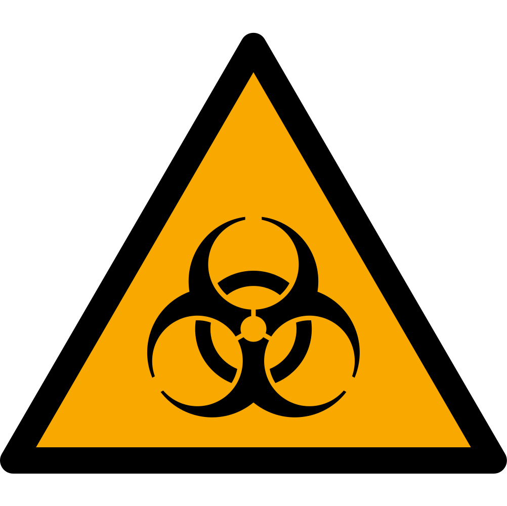

Biohazard
History
In 1966, an environmental health engineer at Dow Chemical named Charles Baldwin led work on a warning symbol for biological hazards. The team wanted a design that was, in Baldwin's words, "memorable but meaningless," so people could be taught what it meant. The symbol was presented in the journal Science in 1967 and is now part of the ISO 7010 safety standard.
Adoption
The three-pronged mark warns of biological hazards around the world, often on a yellow triangle. In the United States, the background color changes with the level of danger.
Sources

Triangle